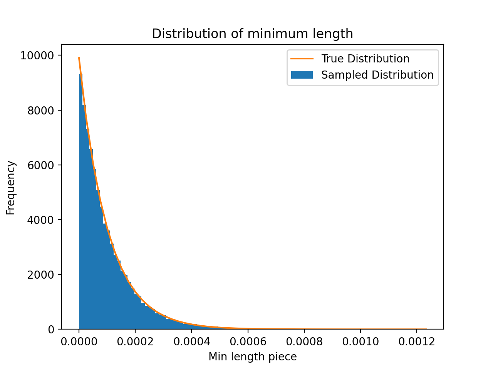

Breaking Sticks
Nov. 13, 2021After two months of interviews, recruiting season is finally over. I think I went through about 20 total hours of interviews and probably 40 interview questions. Although there were some boring or tedious ones, there were definitely several interesting questions as well.
1. Breaking Sticks
Take a 1-meter stick and pick 99 points (uniformly) randomly. We cut the stick at those points to create 100 pieces. What's the expected length of the shortest piece?Let \(m\) denote the length of the shortest piece. We'll tackle this problem by deriving a formula for \(\mathbb{P}(m > x)\) for all \(x \in [0, 1]\).
First, denote \( \{ l_1, l_2, \ldots, l_{100} \} \) as the lengths of all 100 pieces. We can see that $$ \mathbb{P}(m > x) = \mathbb{P}(l_1 > x \land l_2 > x \land \cdots \land l_{100} > x) $$ From this, we can can reformulate the problem as solving for $$ \mathbb{P}(l_1 > x \land l_2 > x \land \cdots \land l_{100} > x) $$
The probability \( \mathbb{P}(l_1 > x \land l_2 > x \land \cdots \land l_{100} > x) \) is the probability that all 100 pieces are larger than \(x\). Consider the equivalent scenario of cutting 100 pieces on the interval \([0, 1-100x]\) and then adding length \(x\) to each of the 100 pieces. We can see that the resulting set of pieces is equivalent to cutting 100 pieces from the meter stick such that all pieces are longer than \(x\). Thus, this probability is the same as making 99 cuts in the interval \([0, 1-100x]\). $$ \mathbb{P}(m > x) = \mathbb{P}(l_1 > x \land l_2 > x \land \cdots \land l_{100} > x) = (1 - 100x)^{99} $$
Finally, we can solve for the expected value as $$ \mathbb{E}[m] = \int_{0}^{\frac{1}{100}} \mathbb{P}(m > x) dx = \int_{0}^{\frac{1}{100}} (1 - 100x)^{99} dx = \frac{1}{10000} $$ Thus, our answer is \( 1 / 10000 = 0.0001 \).
We can experimentally verify this through a couple lines of Python code:
import numpy as np
import matplotlib.pyplot as plt
samples = 50000
num_cuts = 99
breaks = np.random.uniform(0, 1, (samples, num_cuts))
breaks = np.sort(breaks, axis=1)
breaks = np.diff(breaks, axis=1, prepend=0, append=1)
breaks = np.min(breaks, axis=1)
print(f"Mean: {np.mean(breaks):.5} | Std: {np.std(breaks):.5}")
x = np.linspace(np.min(breaks), np.max(breaks), num=50)
y = 9900 * (1 - 100 * x) ** 98
plt.hist(breaks, bins=100, density=True, label="Sampled Distribution")
plt.plot(x, y, label="True Distribution")
plt.legend()
plt.title("Distribution of minimum length")
plt.ylabel("Frequency")
plt.xlabel("Min length piece")
plt.show()Running this yields the following graph
And gives an sample mean of 0.0001002342, which is very close to our theoretical mean.